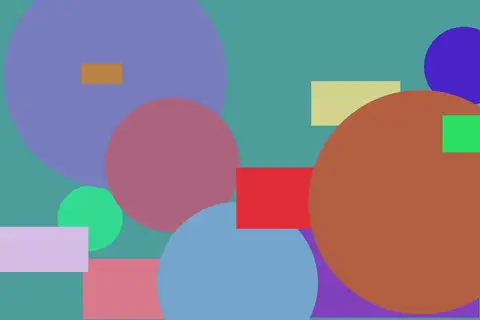

Approved A drawn picture for Safe Water for Villages, number 13 CLT-01 · Introductory workshop 1 Consent: Not required
 Approved A drawn picture for Safe Water for Villages, number 1 CLT-01 · Introductory workshop 1 Consent: Not required